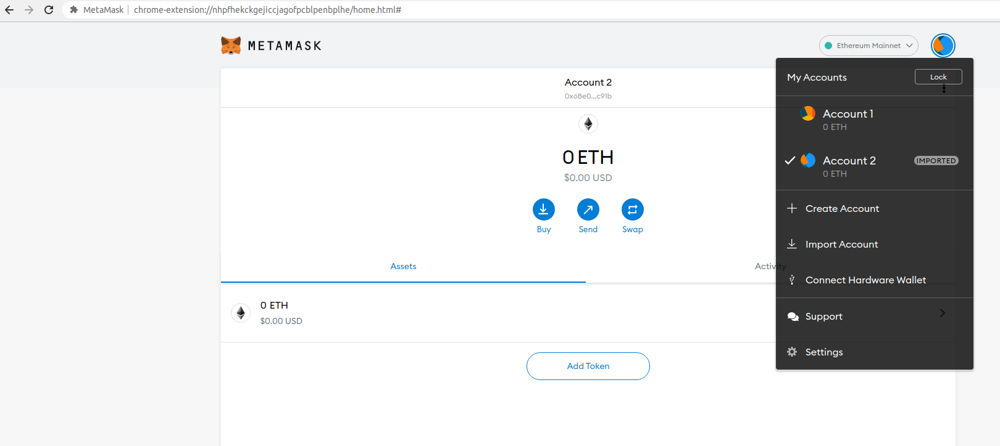
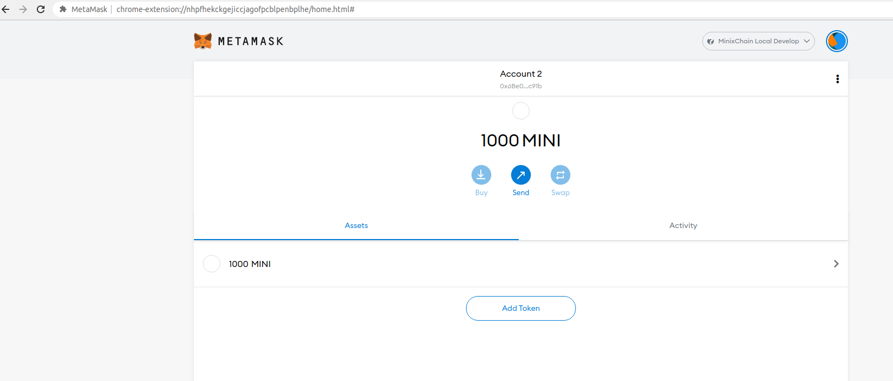
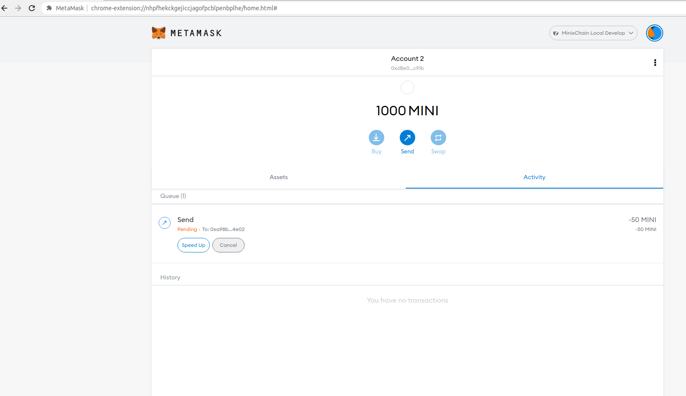
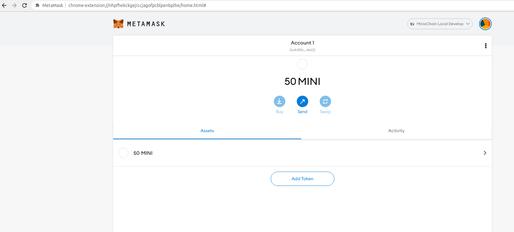

NFTMart Docs
NFTMart developer documentation.
Setting Up a NFTMart Node and Connecting to the Polkadot JS
Introduction
This guide outlines the steps needed to create a development node for testing the Ethereum compatibility features of NFTMart.
A NFTMart development node is your own personal development environment for building and testing applications on NFTMart. For Ethereum developers, it is comparable to Ganache. It enables you to get started quickly and easily without the overhead of a relay chain.
Getting Started
First, start by cloning the NFTMart repo that you can find here:
git clone https://github.com/nftt-studio/nftmart-node
cd nftmart-node
Next, install Substrate and all its prerequisites (including Rust) by executing:
curl https://getsubstrate.io -sSf | bash -s -- --fast
Once you have followed all of the procedures above, it's time to build the development node by running:
cargo build --release -p node-cli
Then, you will want to run the node using the following command:
./target/release/nftmart-node --tmp --chain=dev-evm --alice --rpc-port=8545 --rpc-cors=all -levm=trace
Connecting Polkadot JS Apps to a Local NFTMart Node
The development node is a Substrate-based node, so you can interact with it using standard Substrate tools. The two provided RPC endpoints are:
- HTTP:
http://127.0.0.1:8545 - WS:
ws://127.0.0.1:9944
Start by connecting to it with Polkadot JS Apps. Open a browser to: https://polkadot.js.org/apps/#/explorer. This will open Polkadot JS Apps, which automatically connects to Polkadot MainNet.
Click on the top left corner to open the menu to configure the networks, and
then navigate down to open the Development sub-menu. In there, you will want to
toggle the "Local Node" option, which points Polkadot JS Apps to
ws://127.0.0.1:9944. Next, select the Switch button, and the site should
connect to your NFTMart development node.

With Polkadot JS Apps connected, you will see some information similar to the following:
Using Ethereum Libraries to Deploy Smart Contracts on NFTMart
Introduction
This guide walks through using the Solidity compiler and two different Ethereum libraries to sign and send a transaction on NFTMart manually. The two libraries covered by this tutorial are:
Checking Prerequisites
The examples using both web3.js and ethers.js need you to install Node.js and NPM previously. For the web3.py, you need Python and PIP. As of the writing of this guide, the versions used were:
- Node.js v15.10.0
- NPM v7.5.3
Next, create a directory to store all of the relevant files:
mkdir incrementer && cd incrementer/
For the JavaScript libraries, first, you can create a simple package.json file
(not required):
npm init --yes
In the directory, install the corresponding library and the Solidity compiler:
Web3.js
npm i web3 npm i solc@0.8.0
Ethers.js
npm i ethers npm i solc@0.8.0
The Contract File
The contract used is a simple incrementer, arbitrarily named Incrementer.sol. The Solidity code is the following:
pragma solidity ^0.8.0;
contract Incrementer {
uint256 public number;
constructor(uint256 _initialNumber) {
number = _initialNumber;
}
function increment(uint256 _value) public {
number = number + _value;
}
function reset() public {
number = 0;
}
}
The constructor function, which runs when the contract is deployed, sets the
initial value of the number variable stored on-chain (default is 0). The
increment function adds the _value provided to the current number, but a
transaction needs to be sent, which modifies the stored data. Lastly, the
reset function resets the stored value to zero.
Compiling the Contract
The only purpose of the compile file is to use the Solidity compiler to output
the bytecode and interface (ABI) our contract. (they were arbitrarily named
compile.js)
The compile file for both JavaScript libraries is the same as they share the JavaScript bindings for the Solidity compiler (same package).
Web3.js/Ethers.js
//filename: compile.js
const fs = require('fs');
const solc = require('solc');
// Get Path and Load Contract
const source = fs.readFileSync('Incrementer.sol', 'utf8');
// Compile Contract
const input = {
language: 'Solidity',
sources: {
'Incrementer.sol': {
content: source,
},
},
settings: {
outputSelection: {
'*': {
'*': ['*'],
},
},
},
};
const tempFile = JSON.parse(solc.compile(JSON.stringify(input)));
const contractFile = tempFile.contracts['Incrementer.sol']['Incrementer'];
// Export Contract Data
module.exports = contractFile;
In the first part of the script, the contract's path is fetched, and its content read.
Next, the Solidity compiler's input object is built, and it is passed as input
to the solc.compile function.
Lastly, extract the data of the Incrementer contract of the Incrementer.sol
file, and export it so that the deployment script can use it.
Deploying the Contract
Regardless of the library, the strategy to deploy the compiled smart contract is somewhat similar. A contract instance is created using its interface (ABI) and bytecode. From this instance, a deployment function is used to send a signed transaction that deploys the contract.
For simplicity, the deploy file is composed of two sections. In the first section ("Define Provider & Variables"), the library to use and the ABI and bytecode of the contract are imported. Also, the provider and account from (with the private key) are defined.
The second section ("Deploy Contract") outlines the actual contract deployment
part. Note that for this example, the initial value of the number variable was
set to 5. Some of the key takeaways are discussed next.
Web3.js
//filename: deploy.js
const Web3 = require('web3');
const contractFile = require('./compile');
/*
-- Define Provider & Variables --
*/
// Provider
const providerRPC = {
development: 'http://localhost:8545',
};
const web3 = new Web3(providerRPC.development); //Change to correct network
// Variables
const account_from = {
privateKey: 'YOUR-PRIVATE-KEY-HERE',
address: 'PUBLIC-ADDRESS-OF-PK-HERE',
};
const bytecode = contractFile.evm.bytecode.object;
const abi = contractFile.abi;
/*
-- Deploy Contract --
*/
const deploy = async () => {
console.log(`Attempting to deploy from account ${account_from.address}`);
// Create Contract Instance
const incrementer = new web3.eth.Contract(abi);
// Create Constructor Tx
const incrementerTx = incrementer.deploy({
data: bytecode,
arguments: [5],
});
// Sign Transacation and Send
const createTransaction = await web3.eth.accounts.signTransaction(
{
data: incrementerTx.encodeABI(),
gas: await incrementerTx.estimateGas(),
},
account_from.privateKey
);
// Send Tx and Wait for Receipt
const createReceipt = await web3.eth.sendSignedTransaction(
createTransaction.rawTransaction
);
console.log(
`Contract deployed at address: ${createReceipt.contractAddress}`
);
};
deploy();
Ethers.js
//filename: deploy.js
const ethers = require('ethers');
const contractFile = require('./compile');
/*
-- Define Provider & Variables --
*/
// Provider
const providerRPC = {
development: {
name: 'minix-development',
rpc: 'http://localhost:8545',
chainId: 1500,
},
};
const provider = new ethers.providers.StaticJsonRpcProvider(
providerRPC.development.rpc,
{
chainId: providerRPC.development.chainId,
name: providerRPC.development.name,
}
); //Change to correct network
// Variables
const account_from = {
privateKey: 'YOUR-PRIVATE-KEY-HERE',
};
const bytecode = contractFile.evm.bytecode.object;
const abi = contractFile.abi;
// Create Wallet
let wallet = new ethers.Wallet(account_from.privateKey, provider);
/*
-- Deploy Contract --
*/
// Create Contract Instance with Signer
const incrementer = new ethers.ContractFactory(abi, bytecode, wallet);
const deploy = async () => {
console.log(`Attempting to deploy from account: ${wallet.address}`);
// Send Tx (Initial Value set to 5) and Wait for Receipt
const contract = await incrementer.deploy([5]);
await contract.deployed();
console.log(`Contract deployed at address: ${contract.address}`);
};
deploy();
Web3.js
In the first part of the script, the web3 instance (or provider) is created
using the Web3 constructor with the provider RPC. By changing the provider RPC
given to the constructor, you can choose which network you want to send the
transaction to.
The private key, and the public address associated with it, are defined for signing the transaction and logging purposes. Only the private key is required. Also, the contract's bytecode and interface (ABI) are fetched from the compile's export.
In the second section, a contract instance is created by providing the ABI.
Next, the deploy function is used, which needs the bytecode and arguments of
the constructor function. This will generate the constructor transaction object.
Afterwards, the constructor transaction can be signed using the
web3.eth.accounts.signTransaction() method. The data field corresponds to the
bytecode, and the constructor input arguments are encoded together. Note that
the value of gas is obtained using estimateGas() option inside the constructor
transaction.
Lastly, the signed transaction is sent, and the contract's address is displayed in the terminal.
Ethers.js
In the first part of the script, different networks can be specified with a
name, RPC URL (required), and chain ID. The provider (similar to the web3
instance) is created with the ethers.providers.StaticJsonRpcProvider method.
An alternative is to use the ethers.providers.JsonRpcProvide(providerRPC)
method, which only requires the provider RPC endpoint address. But this might
created compatibility issues with individual project specifications.
The private key is defined to create a wallet instance, which also requires the provider from the previous step. The wallet instance is used to sign transactions. Also, the contract's bytecode and interface (ABI) are fetched from the compile's export.
In the second section, a contract instance is created with
ethers.ContractFactory(), providing the ABI, bytecode, and wallet. Thus, the
contract instance already has a signer. Next, the deploy function is used,
which needs the constructor input arguments. This will send the transaction for
contract deployment. To wait for a transaction receipt you can use the
deployed() method of the contract deployment transaction.
Lastly, the contract's address is displayed in the terminal.
Reading from the Contract (Call Methods)
Call methods are the type of interaction that don't modify the contract's storage (change variables), meaning no transaction needs to be sent.
For simplicity, the get file is composed of two sections. In the first section ("Define Provider & Variables"), the library to use and the ABI of the contract are imported. Also, the provider and the contract's address are defined.
The second section ("Call Function") outlines the actual call to the contract. Regardless of the library, a contract instance is created (linked to the contract's address), from which the call method is queried. Some of the key takeaways are discussed next.
Web3.js
//filename: get.js
const Web3 = require('web3');
const { abi } = require('./compile');
/*
-- Define Provider & Variables --
*/
// Provider
const providerRPC = {
development: 'http://localhost:8545',
};
const web3 = new Web3(providerRPC.development); //Change to correct network
// Variables
const contractAddress = 'CONTRACT-ADDRESS-HERE';
/*
-- Call Function --
*/
// Create Contract Instance
const incrementer = new web3.eth.Contract(abi, contractAddress);
const get = async () => {
console.log(`Making a call to contract at address: ${contractAddress}`);
// Call Contract
const data = await incrementer.methods.number().call();
console.log(`The current number stored is: ${data}`);
};
get();
Ethers.js
//filename: get.js
const ethers = require('ethers');
const { abi } = require('./compile');
/*
-- Define Provider & Variables --
*/
// Provider
const providerRPC = {
development: {
name: 'minix-development',
rpc: 'http://localhost:8545',
chainId: 1500,
},
};
const provider = new ethers.providers.StaticJsonRpcProvider(
providerRPC.development.rpc,
{
chainId: providerRPC.development.chainId,
name: providerRPC.development.name,
}
); //Change to correct network
// Variables
const contractAddress = 'CONTRACT-ADDRESS-HERE';
/*
-- Call Function --
*/
// Create Contract Instance
const incrementer = new ethers.Contract(contractAddress, abi, provider);
const get = async () => {
console.log(`Making a call to contract at address: ${contractAddress}`);
// Call Contract
const data = await incrementer.number();
console.log(`The current number stored is: ${data}`);
};
get();
Web3.js
In the first part of the script, the web3 instance (or provider) is created
using the Web3 constructor with the provider RPC. By changing the provider RPC
given to the constructor, you can choose which network you want to send the
transaction to.
The contract's interface (ABI) and address are needed as well to interact with it.
In the second section, a contract instance is created with web3.eth.Contract()
by providing the ABI and address. Next, the method to call can be queried with
the contract.methods.methodName(_input).call() function, replacing contract,
methodName and _input with the contract instance, function to call, and
input of the function (if necessary). This promise, when resolved, will return
the value requested.
Lastly, the value is displayed in the terminal.
Ethers.js
In the first part of the script, different networks can be specified with a
name, RPC URL (required), and chain ID. The provider (similar to the web3
instance) is created with the ethers.providers.StaticJsonRpcProvider method.
An alternative is to use the ethers.providers.JsonRpcProvide(providerRPC)
method, which only requires the provider RPC endpoint address. But this might
created compatibility issues with individual project specifications.
The contract's interface (ABI) and address are needed as well to interact with it.
In the second section, a contract instance is created with ethers.Contract(),
providing its address, ABI, and the provider. Next, the method to call can be
queried with the contract.methodName(_input) function, replacing contract
methodName, and _input with the contract instance, function to call, and
input of the function (if necessary). This promise, when resolved, will return
the value requested.
Lastly, the value is displayed in the terminal.
Interacting with the Contract (Send Methods)
Send methods are the type of interaction that modify the contract's storage (change variables), meaning a transaction needs to be signed and sent.
For simplicity, the increment file is composed of two sections. In the first
section ("Define Provider & Variables"), the library to use and the ABI of the
contract are imported. The provider, the contract's address, and the value of
the increment function are also defined.
The second section ("Send Function") outlines the actual function to be called with the transaction. Regardless of the library, a contract instance is created (linked to the contract's address), from which the function to be used is queried.
Web3.js
//filename: increment.js
const Web3 = require('web3');
const { abi } = require('./compile');
/*
-- Define Provider & Variables --
*/
// Provider
const providerRPC = {
development: 'http://localhost:8545',
};
const web3 = new Web3(providerRPC.development); //Change to correct network
// Variables
const account_from = {
privateKey: 'YOUR-PRIVATE-KEY-HERE',
};
const contractAddress = 'CONTRACT-ADDRESS-HERE';
const _value = 3;
/*
-- Send Function --
*/
// Create Contract Instance
const incrementer = new web3.eth.Contract(abi, contractAddress);
// Build Increment Tx
const incrementTx = incrementer.methods.increment(_value);
const increment = async () => {
console.log(
`Calling the increment by ${_value} function in contract at address: ${contractAddress}`
);
// Sign Tx with PK
const createTransaction = await web3.eth.accounts.signTransaction(
{
to: contractAddress,
data: incrementTx.encodeABI(),
gas: await incrementTx.estimateGas(),
},
account_from.privateKey
);
// Send Tx and Wait for Receipt
const createReceipt = await web3.eth.sendSignedTransaction(
createTransaction.rawTransaction
);
console.log(`Tx successful with hash: ${createReceipt.transactionHash}`);
};
increment();
Ethers.js
//filename: increment.js
const ethers = require('ethers');
const { abi } = require('./compile');
/*
-- Define Provider & Variables --
*/
// Provider
const providerRPC = {
development: {
name: 'minix-development',
rpc: 'http://localhost:8545',
chainId: 1500,
},
};
const provider = new ethers.providers.StaticJsonRpcProvider(
providerRPC.development.rpc,
{
chainId: providerRPC.development.chainId,
name: providerRPC.development.name,
}
); //Change to correct network
// Variables
const account_from = {
privateKey: 'YOUR-PRIVATE-KEY-HERE',
};
const contractAddress = 'CONTRACT-ADDRESS-HERE';
const _value = 3;
// Create Wallet
let wallet = new ethers.Wallet(account_from.privateKey, provider);
/*
-- Send Function --
*/
// Create Contract Instance with Signer
const incrementer = new ethers.Contract(contractAddress, abi, wallet);
const increment = async () => {
console.log(
`Calling the increment by ${_value} function in contract at address: ${contractAddress}`
);
// Sign-Send Tx and Wait for Receipt
const createReceipt = await incrementer.increment([_value]);
await createReceipt.wait();
console.log(`Tx successful with hash: ${createReceipt.hash}`);
};
increment();
Web3.js
In the first part of the script, the web3 instance (or provider) is created
using the Web3 constructor with the provider RPC. By changing the provider RPC
given to the constructor, you can choose which network you want to send the
transaction to.
The private key, and the public address associated with it, are defined for signing the transaction and logging purposes. Only the private key is required. Also, the contract's interface (ABI) and address are needed to interact with it. If necessary, you can define any variable required as input to the function you are going to interact with.
In the second section, a contract instance is created with web3.eth.Contract()
by providing the ABI and address. Next, you can build the transaction object
with the contract.methods.methodName(_input) function, replacing contract,
methodName and _input with the contract instance, function to call, and
input of the function (if necessary).
Afterwards, the transaction can be signed using the
web3.eth.accounts.signTransaction() method. The data field corresponds to the
transaction object from the previous step. Note that the value of gas is
obtained using estimateGas() option inside the transaction object.
Lastly, the signed transaction is sent, and the transaction hash is displayed in the terminal.
Ethers.js
In the first part of the script, different networks can be specified with a
name, RPC URL (required), and chain ID. The provider (similar to the web3
instance) is created with the ethers.providers.StaticJsonRpcProvider method.
An alternative is to use the ethers.providers.JsonRpcProvide(providerRPC)
method, which only requires the provider RPC endpoint address. But this might
created compatibility issues with individual project specifications.
The private key is defined to create a wallet instance, which also requires the provider from the previous step. The wallet instance is used to sign transactions. Also, the contract's interface (ABI) and address are needed to interact with it. If necessary, you can define any variable required as input to the function you are going to interact with.
In the second section, a contract instance is created with ethers.Contract(),
providing its address, ABI, and wallet. Thus, the contract instance already has
a signer. Next, transaction corresponding to a specific function can be send
with the contract.methodName(_input) function, replacing contract,
methodName and _input with the contract instance, function to call, and
input of the function (if necessary). To wait for a transaction receipt, you can
use the wait() method of the contract deployment transaction.
Lastly, the transaction hash is displayed in the terminal.
Running the Scripts
For this section, the code shown before was adapted to target a development node, which you can run by following Setting Up a Local NFTMart Node . Also, each transaction was sent from the pre-funded account that comes with the node:
- Private key:
99B3C12287537E38C90A9219D4CB074A89A16E9CDB20BF85728EBD97C343E342 - Public address:
0x6Be02d1d3665660d22FF9624b7BE0551ee1Ac91b
(1). First, deploy the contract by running (note that the directory was renamed for each library):
Web3.js
node deploy.js
Ethers.js
node deploy.js
This will deploy the contract and return the address:
Web3.js
/web3js_incrementer$ node deploy.js
Attempting to deploy from account 0x6Be02d1d3665660d22FF9624b7BE0551ee1Ac91b
Contract deployed at address: 0xC2Bf5F29a4384b1aB0C063e1c666f02121B6084a
Ethers.js
/etherjs_incrementer$ node deploy.js
Attempting to deploy from account: 0x6Be02d1d3665660d22FF9624b7BE0551ee1Ac91b
Contract deployed at address: 0x42e2EE7Ba8975c473157634Ac2AF4098190fc741
(2). Next, set the contract address in the get.js and increment.js , then , run the increment file. You can use the get file to verify the value of the number stored in the contract before and after increment it:
Web3.js
# Get value
node get.js
# Increment value
node increment.js
# Get value
node get.js
Ethers.js
# Get value
node get.js
# Increment value
node increment.js
# Get value
node get.js
This will display the value before the increment transaction, the hash of the transaction, and the value after the increment transaction:
Web3.js
/web3js_incrementer$ node get.js
Making a call to contract at address: 0xC2Bf5F29a4384b1aB0C063e1c666f02121B6084a
The current number stored is: 5
/web3js_incrementer$ node increment.js
Calling the increment by 3 function in contract at address: 0xC2Bf5F29a4384b1aB0C063e1c666f02121B6084a
Tx successful with hash: 0x837a599fd07ab83d11a2d2ee097f9afc82dcce491d2acf33eb32546b15a23fd3
/web3js_incrementer$ node get.js
Making a call to contract at address: 0xC2Bf5F29a4384b1aB0C063e1c666f02121B6084a
The current number stored is: 8
Ethers.js
/etherjs_incrementer$ node get.js
Making a call to contract at address: 0x42e2EE7Ba8975c473157634Ac2AF4098190fc741
The current number stored is: 5
/etherjs_incrementer$ node increment.js
Calling the increment by 3 function in contract at address: 0x42e2EE7Ba8975c473157634Ac2AF4098190fc741
Tx successful with hash: 0xcce5908307dc0d2e29b3dda1503cc2c4b3ea710db7d520567c5b81ea516a4136
/etherjs_incrementer$ node get.js
Making a call to contract at address: 0x42e2EE7Ba8975c473157634Ac2AF4098190fc741
The current number stored is: 8
Interacting with a NFTMart Node Using MetaMask
Introduction
MetaMask can be used to connect to NFTMart through the NFTMart node.
This guide outlines the steps needed to connect MetaMask to a NFTMart node in order to send tokens between accounts.
You can interact with NFTMart in two ways: by using Substrate RPC endpoints or using Web3-compatible RPC endpoints. The latter endpoints are currently being served from the same RPC server as the Substrate RPCs. In this tutorial, we will use the Web3 RPC endpoints to interact with NFTMart.
Install the MetaMask Extension
First, we start with a fresh and default MetaMask installation from the Chrome store. After downloading, installing, and initializing the extension, follow the "Get Started" guide. In there, you need to create a wallet, set a password, and store your secret backup phrase (this gives direct access to your funds, so make sure to store these in a secure place).

Once completed, we will import the development account, The details for the development accounts that comes pre-funded for this test node are as follows:
- Alith:
- Public Address:
0xf24FF3a9CF04c71Dbc94D0b566f7A27B94566cac - Private Key:
0x5fb92d6e98884f76de468fa3f6278f8807c48bebc13595d45af5bdc4da702133
- Public Address:
- Baltathar:
- Public Address:
0x3Cd0A705a2DC65e5b1E1205896BaA2be8A07c6e0 - Private Key:
0x8075991ce870b93a8870eca0c0f91913d12f47948ca0fd25b49c6fa7cdbeee8b
- Public Address:
- Charleth:
- Public Address:
0x798d4Ba9baf0064Ec19eB4F0a1a45785ae9D6DFc - Private Key:
0x0b6e18cafb6ed99687ec547bd28139cafdd2bffe70e6b688025de6b445aa5c5b
- Public Address:
- Dorothy:
- Public Address:
0x773539d4Ac0e786233D90A233654ccEE26a613D9 - Private Key:
0x39539ab1876910bbf3a223d84a29e28f1cb4e2e456503e7e91ed39b2e7223d68
- Public Address:
- Ethan:
- Public Address:
0xFf64d3F6efE2317EE2807d223a0Bdc4c0c49dfDB - Private Key:
0x7dce9bc8babb68fec1409be38c8e1a52650206a7ed90ff956ae8a6d15eeaaef4
- Public Address:
- Faith:
- Public Address:
0xC0F0f4ab324C46e55D02D0033343B4Be8A55532d - Private Key:
0xb9d2ea9a615f3165812e8d44de0d24da9bbd164b65c4f0573e1ce2c8dbd9c8df
- Public Address:
- Goliath:
- Public Address:
0x7BF369283338E12C90514468aa3868A551AB2929 - Private Key:
0x96b8a38e12e1a31dee1eab2fffdf9d9990045f5b37e44d8cc27766ef294acf18
- Public Address:
- Heath:
- Public Address:
0x931f3600a299fd9B24cEfB3BfF79388D19804BeA - Private Key:
0x0d6dcaaef49272a5411896be8ad16c01c35d6f8c18873387b71fbc734759b0ab
- Public Address:
- Ida:
- Public Address:
0xC41C5F1123ECCd5ce233578B2e7ebd5693869d73 - Private Key:
0x4c42532034540267bf568198ccec4cb822a025da542861fcb146a5fab6433ff8
- Public Address:
- Judith:
- Public Address:
0x2898FE7a42Be376C8BC7AF536A940F7Fd5aDd423 - Private Key:
0x94c49300a58d576011096bcb006aa06f5a91b34b4383891e8029c21dc39fbb8b
- Public Address:
- Gerald:
- Public Address:
0x6Be02d1d3665660d22FF9624b7BE0551ee1Ac91b - Private Key:
0x99b3c12287537e38c90a9219d4cb074a89a16e9cdb20bf85728ebd97c343e342
- Public Address:
On the import screen, select “Private Key” and paste in one of the keys listed above. For this example we'll use Gerald's key:

You should end up with an imported “Account 2” that looks like this:

Connecting MetaMask to NFTMart
To connect MetaMask to NFTMart, navigate to Settings -> Networks -> Add Network. This is where you can configure which network you would like MetaMask to connect to, using the following network configurations:
- Network Name:
NFTMart Local Develop - RPC URL:
http://127.0.0.1:8545 - ChainID:
1500 - Symbol (Optional):
MINI - Block Explorer (Optional):
https://miniscan.coming.chat/
When you hit "save" and exit the network settings screen, MetaMask should be connected to the NFTMart node via its Web3 RPC, and you should see the NFTMart dev account with a balance of 1000 MINI.

Initiating a Transfer
Let’s try sending some tokens with MetaMask.
For simplicity, we will transfer from this dev account to the one created while setting up MetaMask. Click "Send" to initiate the transfer. Consequently, we can use the “Transfer between my accounts” option. Let’s transfer 100 tokens and leave all other settings as they are:

Once you have submitted the transaction, you will see it “pending” until it is confirmed, as shown in the following image:

When the transaction is confirmed, the balance of Account 2 will be updated, as shown in the following image:

Note that the Account 2 balance has been decreased by the sent amount + gas fees.
Flipping over to Account 1, we see the 50 sent tokens have arrived:

Interacting with NFTMart Using Remix
Introduction
Remix is one of the commonly used development environments for smart contracts on Ethereum. Given NFTMart’s Ethereum compatibility features, Remix can be used directly with a NFTMart node.
This guide walks through the process of creating and deploying a Solidity-based smart contract to a NFTMart node using the Remix IDE.
Getting Started with Remix
Now, let’s fire up Remix to exercise more advanced functionalities in NFTMart.
Launch Remix by navigating to https://remix.ethereum.org/. In the main screen, under Environments, select Solidity to configure Remix for Solidity development, then navigate to the File Explorers view:

We will create a new file to save the Solidity smart contract. Hit the + button under File Explorers and enter the name "MyToken.sol" in the popup dialog:

Next, let's paste the following smart contract into the editor tab that comes up:
pragma solidity ^0.7.0;
import 'https://github.com/OpenZeppelin/openzeppelin-contracts/blob/release-v3.2.0-solc-0.7/contracts/token/ERC20/ERC20.sol';
// This ERC-20 contract mints the specified amount of tokens to the contract creator.
contract MyToken is ERC20 {
constructor(uint256 initialSupply) ERC20("MyToken", "MYTOK") {
_mint(msg.sender, initialSupply);
}
}
This is a simple ERC-20 contract based on the current Open Zeppelin ERC-20 template. It creates MyToken with symbol MYTOK and mints the entirety of the initial supply to the creator of the contract.
Once you have pasted the contract into the editor, it should look like this:

Now, navigate to the compile sidebar option to press the “Compile MyToken.sol” button:

You will see Remix download all of the Open Zeppelin dependencies and compile the contract.
Deploying a Contract to NFTMart Using Remix
Now we can deploy the contract by navigating to the Deployment sidebar option. You need to change the topmost “Environment” dropdown from “JavaScript VM” to “Injected Web3”. This tells Remix to use the MetaMask injected provider, which will point it to your NFTMart node.
As soon as you select "Injected Web3", you will be prompted to allow Remix to connect to your MetaMask account. Press “Next” in Metamask to allow Remix to access the selected account.
Back on Remix, you should see that the account you wish to use for deployment is
now managed by MetaMask. Next to the Deploy button, let’s specify an initial
supply of 8M tokens. Since this contract uses the default of 18 decimals, the
value to put in the box is 8000000000000000000000000.
Once you have entered this value, select "Deploy."
You will be prompted in MetaMask to confirm the contract deployment transaction.

After you press Confirm and the deployment is complete, you will see the transaction listed in MetaMask. And the contract will appear under Deployed Contracts in Remix.
Once the contract is deployed, you can interact with it from within Remix.
Drill down on the contract under “Deployed Contracts.” Clicking on name, symbol, and totalSupply should return “MyToken,” “MYTOK,” and “8000000000000000000000000” respectively.

If you copy the account address from which you deployed the contract and paste it into the balanceOf field, then click balanceOf button , you should see the entirety of the balance of the ERC20 as belonging to that user.
At last, copy the contract address by clicking the button next to the contract name and address.
Interacting with a NFTMart-based ERC-20 from MetaMask
Now, open MetaMask to add the newly deployed ERC-20 tokens. Before doing so, make sure you have copied the contract's address from Remix. Back in MetaMask, click on “Add Token” as shown below. Make sure you are in the account that deployed the token contract.

Paste the copied contract address into the “Token Contract Address” field. The “Token Symbol” and “Token Decimal” fields should be automatically populated.
After hitting “Next,” you will need to confirm that you want to add these tokens to your MetaMask account. Hit “Add Token” and you should see a balance of 8M MyTokens in MetaMask:
Now we can send some of these ERC-20 tokens to the other account that we have set up in MetaMask. Hit “send” to initiate the transfer of 500 MyTokens and select the destination account.
After hitting “next,” you will be asked to confirm (similar to what is pictured below).
Hit “Confirm” and, after the transaction is complete, you will see a confirmation and a reduction of the MyToken account balance from the sender account in MetaMask:

If you own the account that you sent the tokens to, you can add the token asset to verify that the transfer arrived.
Interacting with NFTMart Using Truffle
Introduction
This guide walks through the process of deploying a Solidity-based smart contract to a NFTMart node using Truffle, a commonly used development tool for smart contracts on Ethereum. Given NFTMart Ethereum compatibility features, Truffle can be used directly with a NFTMart node.
Checking Prerequisites
We need to install Node.js (we'll use v15.x) and the npm package manager. You can download directly from Node.js or in your terminal:
Ubuntu
curl -sL https://deb.nodesource.com/setup_15.x | sudo -E bash -
sudo apt install -y nodejs
MacOS
# You can use homebrew (https://docs.brew.sh/Installation)
brew install node
# Or you can use nvm (https://github.com/nvm-sh/nvm)
nvm install node
Running a Development Node
To set up a NFTMart development node, you can follow tutorial of Setting Up a Local NFTMart Node.
Deploying a Contract to NFTMart Using Truffle
To use most Truffle commands, you need to run them against an existing Truffle project. So the first step is to create a Truffle project.
You can create a bare project template, but for those just getting started, you can use Truffle Boxes, which are example applications and project templates. We'll use the MetaCoin box, which creates a token that can be transferred between accounts.
Let's start, follow the steps below.
1.Create a new directory for your Truffle project:
mkdir -p metacoin; cd metacoin
2.Download ("unbox") the MetaCoin box:
truffle unbox metacoin
Once this operation is completed, you'll now have a project structure with the following items:
contracts/: Directory for Solidity contracts migrations/: Directory for scriptable deployment files test/: Directory for test files for testing your application and contracts truffle-config.js: Truffle configuration file
- Create package.json, then configure the network in the truffle-config.js file :
$ cat > package.json <<EOF && npm install
{
"name": "metacoin",
"version": "1.0.0",
"dependencies": {
"@openzeppelin/contracts": "^4.5.0",
"@truffle/hdwallet-provider": "^1.2.2",
"truffle": "^5.1.66"
}
}
EOF
$ cat > truffle-config.js <<EOF
const HDWalletProvider = require('@truffle/hdwallet-provider');
// NFTMart Node Development Account Gerald
// address: 0x6Be02d1d3665660d22FF9624b7BE0551ee1Ac91b
const privateKeyDev =
'99B3C12287537E38C90A9219D4CB074A89A16E9CDB20BF85728EBD97C343E342';
module.exports = {
networks: {
// Moonbeam Development Network
development: {
provider: () => {
if (!privateKeyDev.trim()) {
throw new Error(
'Please enter a private key with funds, you can use the default one'
);
}
return new HDWalletProvider(
privateKeyDev,
'http://localhost:9933/'
);
},
network_id: '*',
},
},
// Solidity 0.5 Compiler
compilers: {
solc: {
version: '^0.5',
},
},
plugins: ['truffle-plugin-verify'],
};
EOF
Note that this is slightly different from
Ganache. The from parameter must be
configured here. The account 0x19E7E376E7C213B7E7e7e46cc70A5dD086DAff2A is
pre-funded , and it's corresponding private key is also stored on the node.
Also, you should make sure you have enough token in your account. The Gerald account comes with enough initial fund for testing purpose.
4.Compile the Truffle project
To compile a Truffle project, change to the root of the directory where the project is located and then type the following into a terminal:
/metacoin $ truffle compile
Compiling your contracts...
===========================
✓ Fetching solc version list from solc-bin. Attempt #1
✓ Fetching solc version list from solc-bin. Attempt #1
> Compiling ./contracts/ConvertLib.sol
> Compiling ./contracts/MetaCoin.sol
> Compiling ./contracts/Migrations.sol
> Artifacts written to /home/aaron/MetaCoin/build/contracts
> Compiled successfully using:
- solc: 0.5.17+commit.d19bba13.Emscripten.clang
5.Deploy the Truffle project
To deploy the Truffle project, execute truffle migrate:
/metacoin $ truffle migrate
Compiling your contracts...
===========================
✓ Fetching solc version list from solc-bin. Attempt #1
✓ Fetching solc version list from solc-bin. Attempt #1
> Everything is up to date, there is nothing to compile.
Starting migrations...
======================
> Network name: 'development'
> Network id: 12191
> Block gas limit: 60000000 (0x3938700)
1_initial_migration.js
======================
Deploying 'Migrations'
----------------------
> transaction hash: 0x41a30adc57db5c2708b82b71b986649e330c998159f6e4c510bd47bd6da7ec97
> Blocks: 0 Seconds: 0
> contract address: 0xDc552396caEc809752fED0c5E23fd3983766e758
> block number: 249
> block timestamp: 1649757912
> account: 0x6Be02d1d3665660d22FF9624b7BE0551ee1Ac91b
> balance: 9998032.3222110515
> gas used: 165475 (0x28663)
> gas price: 2.5000045 gwei
> value sent: 0 ETH
> total cost: 0.0004136882446375 ETH
> Saving migration to chain.
> Saving artifacts
-------------------------------------
> Total cost: 0.0004136882446375 ETH
2_deploy_contracts.js
=====================
Deploying 'ConvertLib'
----------------------
> transaction hash: 0x35c2f3deb276f8786dc87fd616ac753f18c2e1fab8a469f3037c803d6794e7b6
> Blocks: 0 Seconds: 4
> contract address: 0xD81C7319c85fcd6e1F0893b3988BeBab6247Adbc
> block number: 251
> block timestamp: 1649757924
> account: 0x6Be02d1d3665660d22FF9624b7BE0551ee1Ac91b
> balance: 9997679.324075656
> gas used: 95458 (0x174e2)
> gas price: 2.5000045 gwei
> value sent: 0 ETH
> total cost: 0.000238645429561 ETH
Linking
-------
* Contract: MetaCoin <--> Library: ConvertLib (at address: 0xD81C7319c85fcd6e1F0893b3988BeBab6247Adbc)
Deploying 'MetaCoin'
--------------------
> transaction hash: 0x647a7b72ecb4a6da9f2af6ce5f6e4f1ac74f408f674bb78fbaf70aa6564795bc
> Blocks: 0 Seconds: 4
> contract address: 0x596fB37d99bd679d1af76fBCB658f7a1a31A1205
> block number: 252
> block timestamp: 1649757930
> account: 0x6Be02d1d3665660d22FF9624b7BE0551ee1Ac91b
> balance: 9996957.6602766635
> gas used: 288665 (0x46799)
> gas price: 2.5000045 gwei
> value sent: 0 ETH
> total cost: 0.0007216637989925 ETH
> Saving migration to chain.
> Saving artifacts
-------------------------------------
> Total cost: 0.0009603092285535 ETH
Summary
=======
> Total deployments: 3
> Final cost: 0.001373997473191 ETH
6.Interacting with your contracts
Contract abstractions are the bread and butter of interacting with Ethereum contracts from Javascript. In short, contract abstractions are wrapper code that makes interaction with your contracts easy, in a way that lets you forget about the many engines and gears executing under the hood. Truffle uses its own contract abstraction via the @truffle/contract module, and it is this contract abstraction that's described below.
pragma solidity >=0.4.25 <0.6.0;
import "./ConvertLib.sol";
// This is just a simple example of a coin-like contract.
// It is not standards compatible and cannot be expected to talk to other
// coin/token contracts. If you want to create a standards-compliant
// token, see: https://github.com/ConsenSys/Tokens. Cheers!
contract MetaCoin {
mapping (address => uint) balances;
event Transfer(address indexed _from, address indexed _to, uint256 _value);
constructor() public {
balances[tx.origin] = 10000;
}
function sendCoin(address receiver, uint amount) public returns(bool sufficient) {
if (balances[msg.sender] < amount) return false;
balances[msg.sender] -= amount;
balances[receiver] += amount;
emit Transfer(msg.sender, receiver, amount);
return true;
}
function getBalanceInEth(address addr) public view returns(uint){
return ConvertLib.convert(getBalance(addr),2);
}
function getBalance(address addr) public view returns(uint) {
return balances[addr];
}
}
Now, let's look at the Javascript object called MetaCoin provided for us by
Truffle, as made available in the
Truffle console:
truffle(development)> let instance = await MetaCoin.deployed()
truffle(development)> instance
...
methods: {
sendCoin: [Function: bound _createTxObject],
'0x90b98a11': [Function: bound _createTxObject],
'sendCoin(address,uint256)': [Function: bound _createTxObject],
getBalanceInEth: [Function: bound _createTxObject],
'0x7bd703e8': [Function: bound _createTxObject],
'getBalanceInEth(address)': [Function: bound _createTxObject],
getBalance: [Function: bound _createTxObject],
'0xf8b2cb4f': [Function: bound _createTxObject],
'getBalance(address)': [Function: bound _createTxObject]
},
events: {
Transfer: [Function: bound ],
'0xddf252ad1be2c89b69c2b068fc378daa952ba7f163c4a11628f55a4df523b3ef': [Function: bound ],
'Transfer(address,address,uint256)': [Function: bound ],
allEvents: [Function: bound ]
},
_address: '0x08425D9Df219f93d5763c3e85204cb5B4cE33aAa',
...
Making a transaction:
There are three functions on the MetaCoin contract that we can execute. If you
analyze each of them, you'll see that sendCoin is the only function that aims
to make changes to the network. The goal of sendCoin is to "send" some Meta
coins from one account to the next, and these changes should persist.
When calling sendCoin, we'll execute it as a transaction. In the following
example, we'll send 10 Meta coin from one account to another, in a way that
persists changes on the network:
truffle(development)> let accounts = await web3.eth.getAccounts()
undefined
truffle(development)> instance.sendCoin("0x6Be02d1d3665660d22FF9624b7BE0551ee1Ac91b", 10, {from: accounts[0]})
{
tx: '0xf080c9d277f78bb29cb5a5619c1c5f4bdc79e426d0fb3f7d259928fe973384dc',
receipt: {
blockHash: '0x02aae907afd086a36d0b3f417fd3b205b9c1c757a72b2e20da83666d2e36e9cb',
blockNumber: 40,
contractAddress: null,
cumulativeGasUsed: 47308,
from: '0x19e7e376e7c213b7e7e7e46cc70a5dd086daff2a',
gasUsed: 47308,
logs: [ [Object] ],
logsBloom: '0x80000000000000000000000000000000000000000000000000000000000000000000000000000000000000000000000000000000000000000000000000000000000000000000000000000008000000000000800000000000000000000000000000000000000000000000000000000020000000000000000000000010000000000000000000000000000000000000000000000000000000000000000040000000000000000000000000000000000000002000000000000000020000800000000000000002000000000000000000000000000000000000000000000000000000000000000000000000000000000004000000000008000000000000000000000000',
status: true,
to: '0x08425d9df219f93d5763c3e85204cb5b4ce33aaa',
transactionHash: '0xf080c9d277f78bb29cb5a5619c1c5f4bdc79e426d0fb3f7d259928fe973384dc',
transactionIndex: 0,
rawLogs: [ [Object] ]
},
logs: [
{
address: '0x08425D9Df219f93d5763c3e85204cb5B4cE33aAa',
blockHash: '0x02aae907afd086a36d0b3f417fd3b205b9c1c757a72b2e20da83666d2e36e9cb',
blockNumber: 40,
logIndex: 0,
removed: false,
transactionHash: '0xf080c9d277f78bb29cb5a5619c1c5f4bdc79e426d0fb3f7d259928fe973384dc',
transactionIndex: 0,
transactionLogIndex: '0x0',
id: 'log_1a8b84e8',
event: 'Transfer',
args: [Result]
}
]
}
Making a call:
Continuing with MetaCoin, notice the getBalance function is a great candidate
for reading data from the network. It doesn't need to make any changes, as it
just returns the MetaCoin balance of the address passed to it. Let's give it a
shot:
truffle(development)> let balance = await instance.getBalance(accounts[0])
undefined
truffle(development)> balance.toNumber()
9990